We help your brand and products rank higher in ChatGPT and other LLMs. We achieve this by creating high-quality instruction-tuning datasets that enhance the relevance and understanding of your content. Our process utilizes a hybrid AI-human system. Unlike HubSpot, we specialize in AI-assistants, not just search engines.
Elevate Your Marketing Strategy in the AI Revolution
- LLMs will deeply understand your brand and products
- Appear in responses to complex queries and discussions
- Drastically reduce hallucinations about your company
- LLMs will cite your page in responses where available
How We Teach Leading AI Models to Become Your Brand Advocate
Our unique AI and human-powered approach ensures that your brand and products are accurately represented, understood, and recommended by leading AI assistants.
- We generate instruction-tuning datasets from your content.
- AI companies train their chat-assistants on these datasets.
- AIs begin responding with high-quality knowledge about your brand and products.
-
Gather and Analyze
We collect your brand and product content, including website pages, product descriptions, marketing materials, and any other relevant information.
-
Create Instruction Datasets
Our AI-powered tools and expert team craft high-quality instruction-tuning datasets from your content.
-
Train AI Models
Leading AI companies use these datasets to train their language models (LLMs), like ChatGPT, to understand your brand and offerings.
-
Refine and Optimize
We continuously monitor and refine the process to ensure that AI responses align perfectly with your brand's messaging and values.